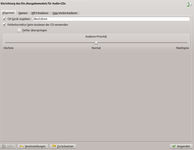
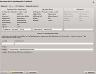
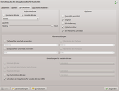
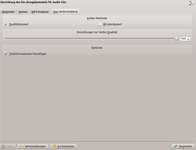
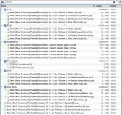

KIO-Slaves
Dieser Artikel wurde für die folgenden Ubuntu-Versionen getestet:
Dieser Artikel ist größtenteils für alle Ubuntu-Versionen gültig.
Zum Verständnis dieses Artikels sind folgende Seiten hilfreich:
KDE-Input/Output-Slaves (kurz KIO-Slaves) sind Module, die ein asynchrones virtuelles Dateisystem darstellen. Hinter diesem virtuellen Dateisystem stellen zahlreiche KIO-Slaves Zugriff auf unterschiedlichste Funktionalitäten bereit. Vereinfacht gesagt ist ein KIO-Slave der Vorbefehl für viele KDE-Programme, für die eine Datei/ein Verzeichnis geöffnet werden soll.
Die Verwendung von Kioslaves ist denkbar einfach, sie geschieht genauso wie die Verwendung von Netzwerkprotokollen (http oder ftp) durch Eingabe in die Adressleiste des Konqueror, Dolphin, Krusader oder z.B. im KDE-Dateidialog (nur einige KIO-Slaves werden im Dateidialog unterstützt). So ist z.B. der KIO-Slave http:/ ein Zugriff auf das Internet als Hypertext Transfer Protocol, file:/ kann auf Datensysteme zugreifen und ftp:/ z.B. auf FTP-Server.
Die Aufgaben der KIO-Slaves werden in GTK-Benutzeroberflächen (GNOME, Unity usw.) weitgehend vom GVFS übernommen.
Installation¶
Zusätzliche KIO-Slaves können über die Pakete
kdemultimedia-kio-plugins
kdesdk-kio-plugins
 mit apturl
mit apturl
Paketliste zum Kopieren:
sudo apt-get install kdemultimedia-kio-plugins kdesdk-kio-plugins
sudo aptitude install kdemultimedia-kio-plugins kdesdk-kio-plugins
installiert [1] werden.
Plugins¶
Für den Konqueror bestehen in der Regel nur 70 verschiedene KIO-Slaves, für andere KDE-Programme weniger (Dateidialog, Dolphin...). Diese können aber auch erweitert werden, so könnte man zum Beispiel mit entsprechender Anpassung des Quellcodes auch mit Dolphin im Web surfen (die KHTML-Engine muss dazu als KPart eingebunden werden). Hier ist eine Liste der wichtigsten KIO Slaves:
| Wichtige KIO-Slaves | |
| KIO Slave | Funktion |
audiocd:/ | Tool um auf Audio-CDs zugreifen zu können. Ermöglicht auch das Rippen der Dateien in MP3 oder ogg. |
ftp:/ | Zugriff auf FTP-Verzeichnisse. Für Anleitung siehe oben. Es gibt auch eine sichere Variante ftps:/ |
fish:/ | Ermöglicht es, auch dann grafisch auf SSH-Verzeichnisse und Rechner zuzugreifen, wenn sftp auf dem Rechner nicht verfügbar ist |
http:/ | Ein vollwertiger Webbrowser mit Flash und Java. Basiert wie der MacOS Browser "Safari" auf KHTML (übrigens viele Handys auch). Es gibt auch eine Verschlüsselte Vairante https:/ |
man:/ | Erlaubt es, die Programm-Handbücher ("man pages") zu lesen, die auf dem System installiert sind. Ohne Zusatzangabe der gewünschten Manpage (z.B. man:/man) werden alle installierten Manpages gelistet. |
settings:/ | Alternativer Zugriff auf die Einstellmöglichkeiten des KDE-Kontrollzentrums. |
sftp:/ | Zugriff auf FTP-Verzeichnisse über eine gesicherte Verbindung. sftp ist eine Variante des ftp-Protokolls über ssh, siehe fish:/ |
smb:/ | Grafischer Zugriff auf Samba-Netzwerke. |
network:/ | Grafischer Zugriff auf LAN-Netzwerke. |
| webdav:/ | Zugriff auf WebDAV Verzeichnisse. Es gibt auch eine sichere Variante webdavs:/ |
Ein Liste aller verfügbaren KIO Slaves und dazugehörige Dokumentation kann über das "Infozentrum" (kinfocenter) im Unterpunkt "Ein-/Ausgabemodule" angezeigt werden.
audiocd¶
Mit Hilfe des Kioslaves audiocd:/ ist das Rippen von CDs unter KDE ein Kinderspiel.
Vor dem Gebrauch empfiehlt es sich, das Paket
libmp3lame0 (multiverse )
mit apturl
Paketliste zum Kopieren:
sudo apt-get install libmp3lame0
sudo aptitude install libmp3lame0
zu installieren, falls man die Dateien als MP3 speichern möchte.
Im K-Menü findet sich unter "SystemSettings" (bzw. "Kontrollzentrum" bis KDE 3.4.3) der Bereich "Sound & Multimedia". Nachdem man auf die Grafik "Audio-CD"  -geklickt hat, kann man über die Reiter die "Qualität", den Dateinamen etc. anpassen.
-geklickt hat, kann man über die Reiter die "Qualität", den Dateinamen etc. anpassen.
Bilder aus »Systemeinstellungen > Einrichtung des Ein-/Ausgabemoduls für Audio-CDs (KDE 4.8.5)«
|  |
| Ansicht »Allgemein« |
|  |
| Ansicht »Namen« |
|  |
| Ansicht »MP3-Kodierer« |
|  |
| Ansicht »Ogg Vorbis-Kodierer« |
Wenn man nun eine Audio-CD ins CD-Laufwerk legt und im Konqueror
audiocd:/
 eingibt, sieht man sogenannte "virtuelle Ordner" für MP3, OggVorbis, flac etc. Virtuell heißt, dass sie (noch) nicht existieren. Indem man den gewünschten Ordner auf einen beliebigen Platz auf der Festplatte zieht (Desktop / Musikordner) wird das Rippen gestartet.
fish/sftp¶
Der kioslave fish:/ ermöglicht es, über SSH auf entfernte Dateien zuzugreifen. Generell ist sftp:// zu bevorzugen, da fish:// zum Funktionieren ein Perlskript auf den entfernten Rechner kopieren und ausführen muss. Nicht zu verwechseln mit ftps, dieses ist das verschlüsselte ftp-Protokoll. sftp:// ist eine ssh-Verbindung, über die Dateien übertragen werden.
Die Eingabe erfolgt in die Adressleiste des Konqueror im Stil von
fish://username@serverip
oder von
fish://username@serveradresse
Es folgt die Abfrage des Passwortes. Nach der korrekten Eingabe kann man mit dem Konqueror in dem entfernten Dateisystem navigieren.
WebDAV¶
WebDAV ist eine Technik, um Verzeichnisse eines Webservers als normale Verzeichnisse einzubinden. Es ist eine einfache Erweiterung der normalen http-Anfragen. Bekannte deutsche Mailprovider, wie gmx oder web.de bieten bis zu 1GB Platz via WebDAV an. Mehr dazu im Artikel über WebDAV. Wie bei fast jedem Protokoll existiert auch eine ssl- geschützte Variante webdavs:/.
Die Eingabe erfolgt wie bei allen anderen Protokollen in der Adressleiste:
webdav://username@server/verzeichnis
Natürlich kann username und verzeichnis auch weggelassen werden, dann fragt Dolphin/Konqueror nach Benutzername und Passwort.
- Erstellt mit Inyoka
-
 2004 – 2017 ubuntuusers.de • Einige Rechte vorbehalten
2004 – 2017 ubuntuusers.de • Einige Rechte vorbehalten
Lizenz • Kontakt • Datenschutz • Impressum • Serverstatus -
Serverhousing gespendet von